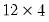

@ones Matrix Utility Matrix or vector of ones. Syntax: @ones(n1[, n2]) n1: integer n2: (optional) integer Return: matrix, vector Creates a matrix or vector filled with the value 1. The size of the created matrix is given by the integers n1 (number of rows) and n2 (number of columns). Examples matrix m1 = @ones(3,2) creates M1, a matrix of ones. sym s1 = @ones(5, 5) sym s2 = @unvech(@ones(5*6/2)) create symmetric matrices of ones, while vector v1 = @ones(18) is an 18-element vector of ones, and matrix k4 = @kronecker(@fill(1, 2, 3), @ones(4, 4)) generates the  matrix formed by taking the Kronecker product of a column vector whose elements are 1, 2, and 3, and a matrix of ones. Cross-references See also @identity, @unitvector, and @zeros.


 matrix of ones.
matrix of ones. symmetric matrices of ones, while
symmetric matrices of ones, while matrix of ones.
matrix of ones.